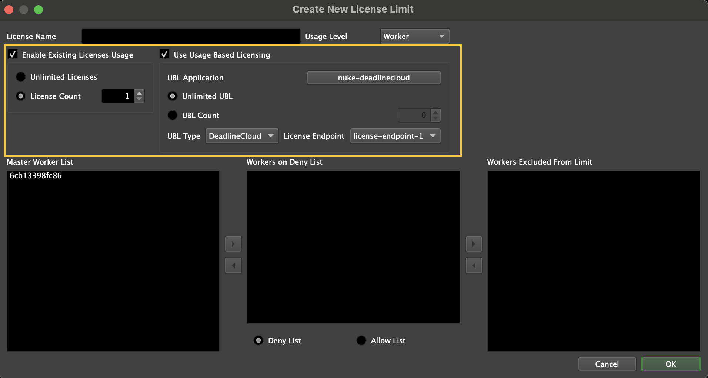

Usage-Based Licensing¶
Note
Usage-based licensing is vended through the AWS Deadline Cloud service. For information on the previous UBL implementation, see the legacy Thinkbox UBL Documentation.
Overview¶
Usage-Based Licensing (UBL) is an on-demand licensing model for select 3rd party products. It can be used as an alternative to floating licenses, or as supplemental licensing to cover temporary increases in render nodes (cloud burst compute, rentals, artist machines overnight, etc). With usage-based licenses, you can pay as you go. You are only charged for the time you use.
Usage-based licensing is vended through the AWS Deadline Cloud service. AWS Deadline Cloud UBL offers a Pay-as-you-go model, billed monthly on your AWS bill. For UBL pricing see the AWS Deadline Cloud Usage-Based Licensing pricing guide.
To use AWS Deadline Cloud Usage-Based Licensing in Deadline 10, you will need to do the following (outlined in greater detail below):
Create an AWS Deadline Cloud License Endpoint in your AWS account, in the AWS VPC your Deadline Workers are in
Configure the license endpoint in your Deadline 10 repository settings
Create a 3rd party license limit using your license endpoint
Assign the limit to the Jobs you want to use with 3rd party licenses
Configuring Usage-Based Licensing¶
Note
For AWS Portal users using Deadline Cloud UBL, it is recommended to follow this article.
Note
When configuring the License Limits, please be aware that there is also a default service quota of 500 concurrent license sessions per AWS Deadline Cloud License Endpoint. To avoid hitting this limit, you will need to request a service quota increase through AWS Service Quotas. See Quotas for Deadline Cloud for more information. This service quota limit is different from your Deadline 10 Limits configuration. If you wish to restrict the number of licenses you can check out at once, even with an increased service quota, please use the Deadline 10 Limits configuration to control your actual license usage.
Before you can start using 3rd Party Usage-Based Licensing, follow the AWS Deadline Cloud documentation to create a license endpoint.
Retrieve the AWS Deadline Cloud License Endpoint DNS name by following the documentation here.
- Enter your AWS Deadline Cloud License Endpoint DNS name in the Repository Options.
This can be done from the Deadline Monitor while in Power User Mode (use the Tools Menu to enter Power User Mode).
- Then select Configure Repository Options from the Tools menu, and select Usage-Based Licensing from the list on the left.


- With Power User Mode activated, go to the Limits panel. Click the plus (+) button to open the New License Limit window to create a new ‘DeadlineCloud’ license limit. Associate your AWS Deadline Cloud License Endpoint DNS name with the limit so Deadline Workers will be able to request licenses from that endpoint. (Note that “Legacy” license limits refer to the deprecated legacy Thinkbox UBL).

Submit a job using the limit(s) you created using the “DeadlineCloud” license endpoint configuration.
Third Party Usage-Based Licensing Explained¶
3rd Party Limits
Limits in Deadline can be used to support applications and plugins that use floating licenses. They enforce the maximum number of concurrent render jobs that use those applications and plugins, which prevents licensing errors from affecting productivity.
Limits can be configured to allow additional Deadline Workers to render these jobs, but these additional Workers will enter an Overage mode. While in Overage mode, the Deadline Workers will redirect license requests for the necessary applications and plugins to the configured AWS Deadline Cloud License Endpoint instead of your local license server. Because Deadline only uses the AWS Deadline Cloud License Endpoint when in Overage mode, your floating licenses will always be preferred, and you will only be billed for the 3rd party license usage time required to render.
Note that if you want all Workers to use 3rd Party render time, you can set the Limit field to zero. This will force all Workers to check out this limit in Overage mode.
Once you have your 3rd Party Limit set up, you need to assign that Limit to any Deadline Jobs that use that 3rd Party product. 3rd Party render time usage will then happen automatically, provided that the Deadline Workers can communicate with your configured AWS Deadline Cloud License Endpoint.
Note that you must be in Power User Mode in the Deadline Monitor to create and modify Limits. For more information about configuring Limits, see the Limits Documentation.
Important: When configuring 3rd Party Limits, please note that there is also a separate service quota for concurrent license sessions per AWS Deadline Cloud license endpoint. By default, this limit is set to 500 sessions. This is a separate limitation from your Deadline 10 Limits configuration. If your concurrent license sessions hit this service quota, you may experience issues like some frames failing or having watermarks on them (due to the fact that some workers may not be able to check out a license beyond the quota limit), even if you have configured your 3rd Party Limits appropriately. To prevent such issues, you will need to request a service quota increase through AWS Service Quotas if needed. See Quotas for Deadline Cloud for more information.
3rd Party Limits Example Using Nuke
Let’s say you have 2 floating licenses of Nuke, and 4 render nodes that are capable of rendering Nuke jobs. To ensure that you don’t run into Nuke licensing errors, you would create a nuke-deadlinecloud Limit and set it to 2. Then any job that requires the Nuke renderer would specify the nuke-deadlinecloud Limit at submission time. This ensures that you won’t run out of licenses because no more than 2 instances of Nuke would be used on the farm at any given time.
If you would like all 4 render nodes to join the render, you can configure the nuke-deadlinecloud Limit to allow your other 2 render nodes to use 3rd Party Usage-Based Licensing. First, you will leave the existing Limit maximum at 2, since that is still your floating license count. Instead, you will set the Limit Overage to 2 so that your additional render nodes can pick up Nuke jobs. Finally, you need to enable the Use Usage-Based Third Party Licensing option and select nuke-deadlinecloud as the License Application. After you press OK, you are now ready to use AWS Deadline Cloud UBL for Nuke renders!
When the additional 2 render nodes pick up your Nuke jobs, they will recognize that they are in Overage mode, and Nuke will connect to the license endpoint instead of your local Nuke license server. Because Nuke render time will only connect to your license endpoint in Overage mode, it ensures that Deadline always prefers your existing floating licenses before using 3rd Party render time!
Monitoring Render Time Usage¶
You can view your AWS Deadline Cloud UBL costs through AWS Cost Explorer. For UBL pricing see the AWS Deadline Cloud Usage-Based Licensing pricing guide.
Troubleshooting¶
License Not Found Errors With UBL Limits¶
If you get “license not found” errors and have configured AWS Deadline Cloud UBL limits, ensure you have added the correct metered product to your license endpoint.

{kind=link}